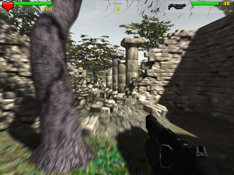
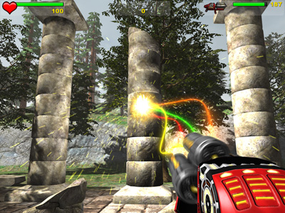

Motion Blur
From C4 Engine Wiki

The C4 Engine is capable of rendering full-scene motion blur as a post-processing effect. Motion blur in C4 is based on the concept of a velocity-depth-gradient buffer, and it employs a sophisticated algorithm that uses information in the velocity buffer to apply the correct blur after the entire scene has been rendered.
When motion blur is enabled, the engine renders an extra pass of the visible geometry. In this extra pass, the screen-space velocity of the geometry occupying each pixel is drawn to the velocity buffer, along with some additional information about the depth gradient of the geometry. The screen-space velocity of a single pixel depends on several factors, including the motion of the geometry occupying that pixel, the motion of the camera, and possibly the motion of different vertices within the geometry (for example, skinned characters and dynamic cloth have moving vertices). The engine takes all of these into account and generates an accurate velocity for all objects in the scene. In Figure 1 to the right, the ground is blurred because the player is moving forward.

After all rendering passes have been completed, the engine renders a post-processing pass. In this pass, the information in the velocity buffer is used to generate a directional blur at each pixel. Blindly doing this at each pixel works in most cases, but there are situations in which it would generate artifacts. In the case that a slow moving or stationary foreground object lies in front of a fast moving background object, we don't want the motion of the background object to cause foreground pixels to blur into the background. The engine is careful to detect this situation and apply a more accurate calculation to avoid artifacts. In the Figure 2 to the right, motion blur can be seen on the spinning barrel of the proton cannon, but it does not interfere with the stationary parts of the gun.
Controlling Motion Blur
In the demo game that ships with C4, motion blur can be enabled or disabled by the user in the Graphics Settings dialog. This works by setting or clearing the kRenderOptionMotionBlur flag in the Graphics Manager using the GraphicsMgr::SetRenderOptionFlags() function.
Motion blur can be enabled or disabled on a per-geometry basis in the World Editor by selecting a geometry and opening the Get Info dialog. There is a check box under the Geometry tab called "Do not apply motion blur". This check box corresponds to the kGeometryMotionBlurInhibit that can be set for a GeometryObject using the GeometryObject::SetGeometryFlags() function.
It is sometimes necessary to explicitly tell the engine that an object has stopped moving so that motion blur for that object can be reset. (A stopped object is not normally being invalidated in the usual way, so the engine has no way of knowing that it needs attention.) The Node::StopMotion() function can be called to update the internal transforms so that an object is correctly recognized as completely stopped.
Further Reading
- Lengyel, Eric. "Motion Blur and the Velocity-Depth-Gradient Buffer". Game Engine Gems, Volume One, Jones and Bartlett, 2010.